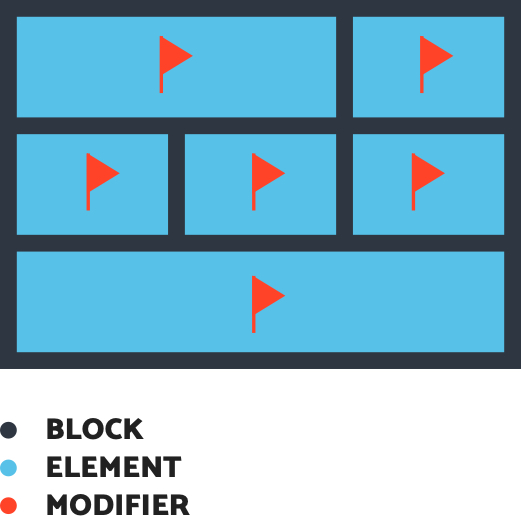

What is BEM?
- Helping developers to organize and maintain the css in a more efficient way.
- Designed to fix non-semantic DOM structures at all levels (HTML, CSS, JavaScript, templates and UX design)
Why Learning?
Basic:

- Block: A block is an independent entity with its own meaning. (heading, button, navigation)
- Element: Part of a block, tied to it semantically and functionally. It has no meaning outside of the block it belongs to.
- Modifier: Modifiers are flags set on blocks or elements; they define properties or states.
How does BEM work?
- Providing the reusability, making reusable css code.
Why use EBM?
- Reduce the conflict of specificity
- Free the structural dependencies.
- The modularity can avoid problems form cascading.
Reference
25/09/2016
Learning by doing
After first interview, I had some really good advice and one little assignment, which is a good opportunity for me to practice, the following is the whole process about how I build it.
I read the article which is recommended by the interviewer.
BEMantic: DRY Like You Mean It
How SASS and BEM helpes the UI development.
- Consistency and predictability
Using the html tags or attributes as hooks for styling, causing the problem that when tags or attributes all running out, you will have to use class, therefore, the code will become mixture of different selector types. Specificity
This mentions about the typical way of css naming isn’t that specific, it means when you see1ul > li > ayou actually couldn’t understand which html tag it is.
Portability and resilience
Compare the following 2 codes.1[type="email"], [type="number"], [type="password"], [type="search"], [type="text"], [type="tel"], textarea { }With a meaninful class
1.o-text-input { }The later one can make sure even in the future, there is another new input tag, you can still control it’s style by adding the class name to it, then you won’t have to adjust the css code.
Performance
Using only class as selector promotes the performance instead of using tags and attributes.Maintenance and other benefits
Splitting your source CSS/Sass into multiple files, this massively reduces the friction in locating the styles for a particular component found in the HTML.
- Consistency and predictability
Building the html layout according to the little brief.

The first question for me is how should I build html structure, I googled the keyword “customized checkbox”, and then I get this code reference.
1. Custom checkboxes with CSS only
Meanwhile, the demo code which is send by the interviewer is also my reference, too.
2. Reference for checkbox assignment
The following is my simple HTML structure.
At first I have no idea about the sequence of the input and label, because from the brief, it looks like the label should be the first. However, from my 1st reference code, if I want to control the style of label and defining it depending on the checked/unchecked situation, the logic would be like this
|
|
We can use plus sign(+) to select the adjacent sibling element, or even the wave sign(~). However, according to the cascading of CSS, we couldn’t select the previous sibling element, so I decided to keep the html in this status, and using position style attribute to make the UI happen.
Here is my css code based on BEM methodology.
Logic
First, we remove the default checkbox icon from the screen,
and then add a ::before css pseudo element, setting it as a container for checking sign, an ::after css pseudo element for putting the checking sign.
Warning Text
There is a requirement for the validation, the warning text shouldn’t show up if the status of checkbox is checked.